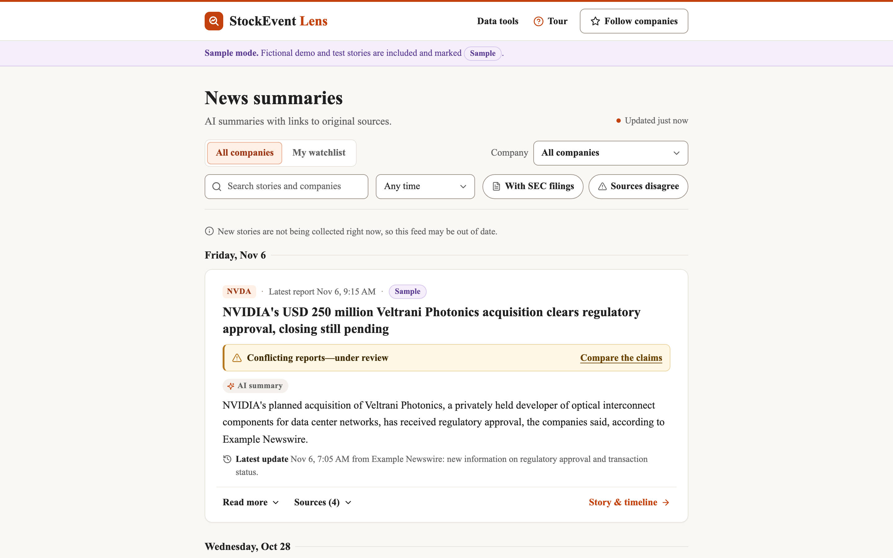
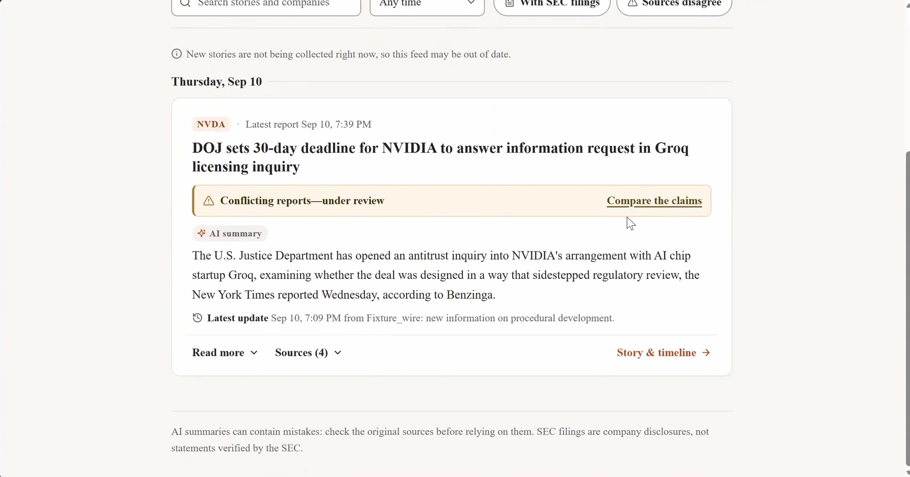
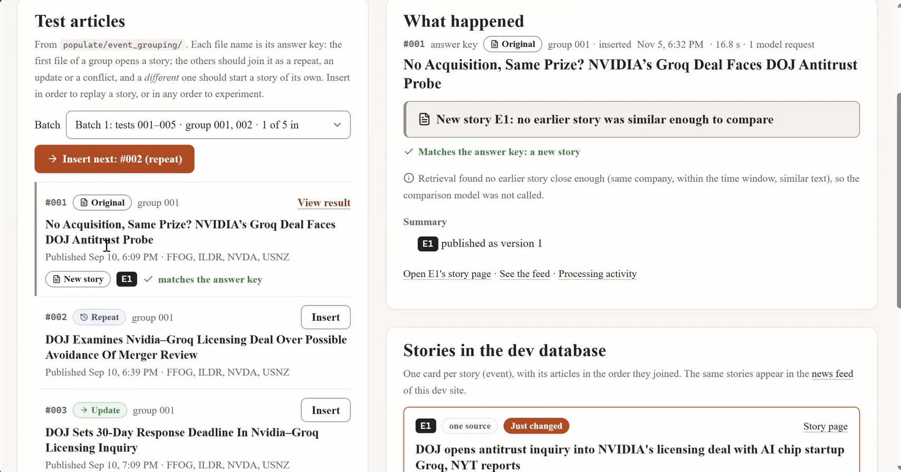

Consolidation
Does an incoming article report an event we already track (a repeat, an update or a conflict), or a new event?
Ground truth: 125 hand-labelled articles in 25 batches (how they were made).
The system uses an LLM for two decisions. This page sets out how each one is evaluated, for any model, local or API, under the same rules, and why each step can be trusted. Sources are marked *, ** and *** and listed in the notes.
StockEvent Lens collects SEC EDGAR 8-K filings and Alpaca (Benzinga) news, groups the reports about one development into a single event, labels each new report as a repeat, an update or a conflict, and writes a summary in which every statement quotes its sources. Conflicting reports are flagged for a person to review; no source is declared right. Code and setup: github.com/Qwenty228/GC1.



Does an incoming article report an event we already track (a repeat, an update or a conflict), or a new event?
Ground truth: 125 hand-labelled articles in 25 batches (how they were made).
Does each event summary stay grounded in its sources, cover the updates and attribute conflicts correctly?
Live data has no labels, so checks are layered, with human ratings on a sample.
125 hand-labelled articles in 25 batches, built by five team members. Every batch covers the full range: an original story, a repeat, an update, a conflict and an unrelated event, drawn from real news with synthetic variants where real examples are scarce.
Real news in two SQL files in SystemCode/populate/, loaded by make db. They hold articles and
filings only: no events, labels or summaries.
002_live_news_nvda_2026-10-17.sql: 21 NVDA articles collected live by the ingestion pipeline on 16–17 October 2026.003_nvda_8k_windows_2026-07-08.sql: 239 NVDA articles fetched from Alpaca's news history around NVIDIA's three
2026 8-K filings (1 July, 17 August, 26 August; 12 hours before to 48 hours after each), plus the three filings. They do not overlap in time
with the 125 labelled articles. The summarization runner's real mode (local_full.py --mode real) uses this file.Company links in both files need uv run datasources-db register-companies to have run first.
8-K filings cannot be scheduled: none arrived during our live runs, and live NVDA news is thin (a handful of articles over a weekend, against about 150 in the 60 hours around one earnings filing). Windows around known filings give a dense, complete set on demand.
Cause and effect is kept: the runner replays each window one record at a time in publication order, with later articles hidden until they arrive, just as the live pipeline would see them. Live behaviour itself (delays, restarts, catch-up gaps) is checked separately against Alpaca's archive.
Each rule removes one known way an LLM evaluation can mislead. The tag says how far the project is today.
In placePartlyPlanned
Consolidation: copy evaluation/consolidation/experiments/local.py (any OpenAI-compatible API or Ollama),
or claude.py, opus.py, gemini.py, groq.py or local_qwen3.py, and change only
NAME and MODEL (plus BASE_URL and the API-key variable for a new provider). Set BATCHES = []
to run all 25 batches. baseline_rule.py is the template for a model that is not an LLM.
Long runs: the result file is saved after every batch. If a run stops (rate limit, outage), set RESUME to its
file name and run again: complete batches are kept, the others rerun whole, and the model, prompt, embedder and retrieval settings
must match. VERBOSE = True logs every stage and HTTP call. Free tiers: wrap the backend in RateLimited,
as groq.py and gemini.py do.
Summarization: copy evaluation/summarization/experiments/local_full.py and change only NAME and MODEL
(not run further for now; see Part B).
Do not edit src/ or the prompts. Results are saved in evaluation/consolidation/results/ and
evaluation/summarization/results/; compare consolidation runs with uv run datasources-eval compare.
Every run uses the same 25 batches, the same prompt (compare-2) and the same retrieval settings, the
.env.example values: SIMILARITY_MAX_CANDIDATE_EVENTS=3 and SIMILARITY_LEXICAL_PLAUSIBLE_RANK=0.
Check the settings block of a result file before adding it to the table.
Consolidation results · evaluation/consolidation/results/
| Model | Grouping F1 | Precision | Recall | Label macro-F1 | Conflict F1 | Uncertain | Result file |
|---|---|---|---|---|---|---|---|
| Gemini 3.8 Flash | 0.940 | 1.00 | 0.89 | 0.889 | 0.94 | 2 | gemini_125_completed.json* |
| Claude Sonnet 5.5 | 0.925 | 1.00 | 0.86 | 0.869 | 0.96 | 0 | 2026-10-23_1818_claude-sonnet-5-5 |
| Claude Haiku 5.5 | 0.859 | 1.00 | 0.75 | 0.806 | 0.94 | 2 | 2026-10-23_1902_haiku-sonnet-settings |
| Similarity gate alone (no LLM) | 0.954 | 0.95 | 0.96 | 0.355 | 0.00 | 0 | 2026-10-10_1458_baseline-rule |
* Le Duc Nghia's run. The first run (2026-10-24_1709_gemini) finished 68 of 125 articles before quota
limits and outages; the other batches were rerun whole with the same settings and combined, re-scored with the same metrics.py.
Runs at 6 / 3 (6 candidate events, lexical rank 3) · not comparable with the table above
| Model | Grouping F1 | Precision | Recall | Label macro-F1 | Conflict F1 | Uncertain | Result file |
|---|---|---|---|---|---|---|---|
| Claude Opus 5.5 (low effort) | 0.947 | 1.00 | 0.90 | 0.920 | 0.98 | 0 | 2026-11-06_1007_claude-opus-5-5-low |
| Claude Haiku 5.5 | 0.872 | 1.00 | 0.77 | 0.803 | 0.94 | 4 | 2026-10-23_1557_claude |
| Qwen 2.5 7B (local) | 0.643 | 1.00 | 0.47 | 0.453 | 0.44 | 17 | 2026-11-05_1519_local-qwen2.5-7b |
| Rule baseline (always “repeat”) | 0.735 | 0.59 | 0.96 | 0.102 | 0.00 | 0 | 2026-11-05_1354_baseline-rule |
uv run datasources-eval compare lists complete runs; uv run datasources-eval report <run> shows any run in full.2026-10-12_0348, 2026-10-22_2231.2026-10-10_1458), Sonnet and Gemini at 3 / 0,
and Qwen 2.5 7B (2026-11-05_1519), Haiku (2026-10-23_1557) and Opus at 6 / 3. Runs by Nathan (gate, Qwen),
Claire (Haiku), Nakhin (Sonnet), Le Duc Nghia (Gemini) and Lim Hao (Opus).Every miss of Gemini 3.8 Flash was traced to its cause (Le Duc Nghia's error analysis, with each batch documented in
Miscellaneous/Report/), and Opus 5.5 trips over largely the same articles. The pattern points at the pipeline more than at the model.
test_078 and test_083 are follow-ups in new wording
(“started shipping” → “completed acceptance testing”) that score below the 0.78 similarity filter, so they open a new event for every model.test_058, test_068) become separate
events, because the prompt treats a different session as a different event.test_049) is labelled
update, as the prompt instructs.uncertain results (test_009,
test_063) the label was right; the evidence check downgraded it because one quote was not word for word in its passage.Summarization results (local models) · evaluation/summarization/results/
| Run | Data | Events | Published | Rejected | No answer |
|---|---|---|---|---|---|
2026-10-20_1031_…_fixtures-production | 125 labelled articles | 52 | 7 | 36 | 9 |
2026-10-19_2042_…_real-aug17_production | Real news, 15–20 Aug, production filter | 34 | 4 | 25 | 5 |
2026-10-20_0426_…_real-aug17_no-filter | Same slice, similarity gate off: every event in the ±7-day window reaches the LLM | 22 | 3 | 16 | 3 |
2026-10-23_2202_local-qwen3-8b_…_fixtures-production (Qwen3 8B) | 125 labelled articles | 77 | 44 | 33 | 0 |
_scores.csv.Every model is run once, with each pair judged in one order, so small differences may be noise.
freeneeds peoplepaid for API models
Run the similarity gate alone on all 25 batches, with no LLM. Record grouping and label scores.
Why: this is the number every LLM must beat. Event-detection evaluations judge systems against simple baselines on the same data.**
Collect 25–50 pairs of articles about the same company but different events. Two people label each pair without seeing each other's labels or any model output. Report Cohen's κ, then settle disagreements.
Why: the current set has only 2 hard negatives, which are exactly the cases a judge exists for. κ shows the labels are reliable, not one person's habit.*
On development batches only, find the similarity range where the gate is unsure (for example 0.78–0.87). Fix it before any LLM run, then check it on held-out batches. Only pairs inside the band go to an LLM.
Why: the judge is spent where it can help, and the band is not tuned to the test set.**
Pilot 5 pairs to size the budget. Then judge every band pair with each model in both candidate orders, caching each judgment by model, prompt version and pair. Stop at the budget and mark the run incomplete.
Why: LLM judges favour whichever answer comes first; running both orders exposes that bias.* The cache means a crash or rerun costs nothing.
Report pairwise and B-cubed precision and recall; misses and false merges separately; label macro-F1 with a confusion matrix. Compare each LLM with the gate using McNemar's test, with confidence intervals from resampling whole batches.
Why: pairwise scores over-weight large groups and B-cubed does not. A single combined error hides its assumptions. McNemar is built for two systems scored on the same items, and resampling batches respects that articles in one batch are related.**
Paused. Summarization was evaluated with the local runs and the direct-prompting review above; steps B1–B4 are the method for a full evaluation and have not been run.
For each summarizer, record pass rates on the first attempt and within 4, attempts per summary, rejection reasons, tokens and latency.
Why: these show the summarizer works, not that it is right. The production check only confirms that quotes and numbers appear in their sources, so these numbers are always labelled as reliability.
Split each summary into sentences and score each one against its cited passages with one fixed NLI (entailment) model, the same for every summarizer. Report the share of supported and unsupported claims.
Why: entailment models work best sentence by sentence, and a quote's presence does not show a claim is supported.*** One fixed scorer cannot favour one model.
Take 50 events grouped by the answer key, not by the system. Run each summarizer, plus an extractive baseline (passages copied verbatim) and a template baseline (original headline plus the update sentences). Score update coverage and conflict attribution.
Why: fixed grouping means differences come from the summary, not from grouping errors. The baselines show whether the LLM adds anything over copying.***
Two raters score 30–50 summaries on a fixed rubric (coverage, conflict attribution, factual errors), with model names hidden, order shuffled and positions swapped. Report κ and send disagreements to a third reader.
Why: blinding and shuffling remove the biases that also affect LLM judges,* and human ratings check that the automatic scores match what a reader notices.***
Every run writes the result format below. Build one table per part, one row per model, including cost, time and failures. Never edit numbers by hand.
Why: hosted models change behind the same name, so a result is only comparable with its version and date.*
No model judges its own output. Summaries are judged by the NLI model and by people, never by Claude, Gemini or Qwen.
Why: LLM judges prefer their own answers.*
If an LLM judge is wanted for groundedness, compare it with the NLI model on labelled examples first and report both.
Why: LLMs can spot factual errors without training, but only a comparison shows whether they add anything.***
a run is marked incomplete, its prompt version differs from the others, or its model ID is not recorded. Every report ends with its limitations: sample size, batch-level resampling, and any model that could not be run within budget.
run_id, date, part (consolidation|summary), model_id, model_version, prompt_version, dataset_id, n_items, metric, value, ci_low, ci_high, calls, tokens_in, tokens_out, wall_time_s, failures, incomplete (yes|no)
checked verified against the source verify check against the original before citing